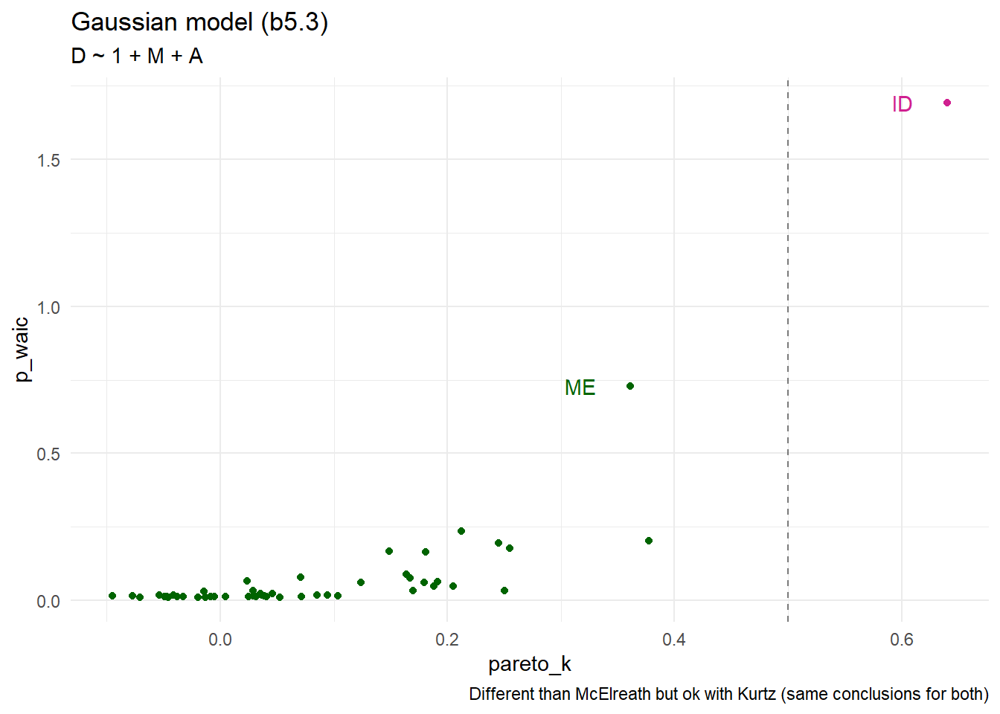

d <- tibble(
species = c("afarensis", "africanus", "habilis", "boisei",
"rudolfensis", "ergaster", "sapiens"),
brain = c(438, 452, 612, 521, 752, 871, 1350),
mass = c(37.0, 35.5, 34.5, 41.5, 55.5, 61.0, 53.5)) |>
mutate(brain_r = scales::rescale(brain),
mass_s = scale(as.vector(mass)))7 Ulysses’ Compass
An important point to remember is mentioned in McElreath (2020), introduction of chapter 7.
… Whatever you think about null hypothesis significance testing in general, using it to select among structurally diferent models is a mistake. p-value are not designed to help you navigate between underfitting and overfitting.
7.1 The problem with parameters
\(R^2\) is not the right way to do it.
\[ \begin{align*} R^2 &= \frac{var(outcome) - var(residuals)}{var(outcome)} = 1 - \frac{var(residuals)}{var(outcome)} \\ &= 1- \frac{SSR}{SST} \end{align*} \]
7.1.1 More parameters always improve fit OVERFITTING
Get the data and standardize it. In section 7.1.1 McElreath (2020) exolains that we rescale brain size instead of standardizing it because we wnat to preserve zero as a reference point.
plot the raw data
colr <- data.frame(colr = seq(from = min(d$mass) - 5, to = max(d$mass) + 5,
length.out = 100))
ggplot(d, aes(x = mass, y = brain, label = species)) +
geom_segment(data = colr, aes(x = colr, xend = colr, y = -Inf, yend = Inf,
color = colr),
inherit.aes = FALSE, size = 3) +
geom_point(color = "gold", size = 3) +
ggrepel::geom_text_repel(color = "yellow") +
scale_color_paletteer_c("scico::berlin") +
theme_minimal() +
theme(panel.grid = element_blank(),
legend.position = "none") +
labs(title = "Average brain volume vs body mass for 6 hominin species",
x = "body mass in kg", y = "brain volume in cc")
See hadley for very nice discussion on how to process several models in one dataframe.
7.1.2 Too few parameters hurts UNDERFITTING
See Rethinking box in section 7.1.2 which explains the Bias-variance trade-off.
Bias relates to underfitting and variance to over-fitting.
7.2 Entropy and accuracy
7.2.1 Firing the weatherperson
# the emoji used in his section
sun <- emo::ji("sun")
rain <- emo::ji("cloud_with_rain")
umbrella <- emo::ji("closed_umbrella")The currently emplyoed weather person has the following data
weather <- data.frame(
day = 1:10,
predicted = rep(c(1, 0.6), times = c(3, 7)),
observed = rep(c(rain, sun), times = c(3, 7))
) |>
t() |>
as.data.frame() |>
tibble::rownames_to_column()
weather |> gt::gt(rowname_col = "rowname") |>
gt::tab_options(column_labels.hidden = TRUE)| day | 1 | 2 | 3 | 4 | 5 | 6 | 7 | 8 | 9 | 10 |
| predicted | 1.0 | 1.0 | 1.0 | 0.6 | 0.6 | 0.6 | 0.6 | 0.6 | 0.6 | 0.6 |
| observed | üåß | üåß | üåß | ‚òÄÔ∏è | ‚òÄÔ∏è | ‚òÄÔ∏è | ‚òÄÔ∏è | ‚òÄÔ∏è | ‚òÄÔ∏è | ‚òÄÔ∏è |
The new weather person has this data
weather_new <- data.frame(
day = 1:10,
predicted = 0,
observed = rep(c(rain, sun), times = c(3, 7))
) |>
t() |>
as.data.frame() |>
tibble::rownames_to_column()
weather_new |> gt::gt(rowname_col = "rowname") |>
gt::tab_options(column_labels.hidden = TRUE)| day | 1 | 2 | 3 | 4 | 5 | 6 | 7 | 8 | 9 | 10 |
| predicted | 0 | 0 | 0 | 0 | 0 | 0 | 0 | 0 | 0 | 0 |
| observed | üåß | üåß | üåß | ‚òÄÔ∏è | ‚òÄÔ∏è | ‚òÄÔ∏è | ‚òÄÔ∏è | ‚òÄÔ∏è | ‚òÄÔ∏è | ‚òÄÔ∏è |
would be, i.e. the expected nb of correct predictions,
3 * 1 + 7 * 0.4[1] 5.8which gives a frequency per day (probability) of
(3 * 1 + 7 * 0.4) / 10[1] 0.587.2.2 Information and uncertainty
\[ H(p)=-E(\log{p_i})=-\sum_{i=1}^n{p_i \cdot \log{p_i}} \]
the entropy for the above is
p <- c(0.3, 0.7)
-sum(p * log(p))[1] 0.6108643but in Abu Dhabi it is
p <- c(0.01, 0.99)
-sum(p * log(p))[1] 0.056001537.2.3 From entropy to accuracy
\[ D_{KL}(p,q) = H(p,q) - H(p) = -\sum{p_i \cdot (\log{p_i} - \log{q_i})} = -\sum{p_i \cdot \frac {\log{p_i}} {\log{q_i}}} \]
7.2.4 Estimating divergence
The whole point here is the if we have 2 models, with 2 different probability distributions \(q\) and \(r\)
then their respective divergence is
\[ D_{KL}(p,q) = H(p,q) - H(p) = E(\log{q}) - E(\log{p}) \]
and
\[ D_{KL}(p,r) = H(p,r) - H(p) = E(\log{r}) - E(\log{p}) \]
and therefore their relative divergence between each other is
\[ \begin{align*} D_{KL}(p,q) - D_{KL}(p,r) &= [H(p,q) - H(p)] - [H(p,r) - H(p)] \\ &= H(p,q) - H(p,r) \\ &= E(\log{q}) - E(\log{r}) \end{align*} \]
and the relative value of the \(D_{KL}(p,q)\) and \(D_{KL}(p,r)\) is approximated with their deviance
\[ D(q) = -2 \sum_i{\log{q_i}} \\ D(r) = -2 \sum_i{\log{r_i}} \]
or, even more simply we could use the total score
\[ S(q) = \sum_i{\log{q_i}} \\ S(r) = \sum_i{\log{r_i}} \]
Important: Since the deviance / total score represente the relative distance from the target, it does not mean anything by itself. It means something only when comparing models with each other.
The Bayesian version of the log-probability score is called the log-pointwise-predictive-density (lppd) and is defined as
The log-pointwise-predictive-density
\[ lppd(y, \Theta) = \sum_{i=1}^N{\log{Pr(y_i)}} = \sum_{i=1}^N{\log{\frac{1}{S}\sum_{s=1}^SPr(y_i \mid \Theta)}} \]
7.2.5 Scoring the right data
Note the the total score, or deviance used just previously suffers from the same flaw as \(R^2\). That is, the more parameters (i.e. complexity), the better fit we obtain regardless of the relevance of such a complexity.
7.3 Golem taming: regularization
\[ \begin{align*} y_i &\sim \mathcal{N}(\mu_i, \sigma) \\ \mu_i &= \alpha + \beta \cdot x_i \\ \alpha &\sim \mathcal{N}(0, 100) \\ \beta &\sim \mathcal{N}(0, 1) \\ \sigma &\sim \mathcal{Exp}(1) \end{align*} \]
7.4 Predicting predictive accuracy
There are 2 families of strategies to evaluate models
- Cross-validation
- Information citeria
7.4.1 Cross-validation
The method suggested here is to use Leave-one-out cross validation (LOOCV) coupled with Pareto-smoothed importance sampling cross-validation (PSIS) to approximate the LOOCV’s score.
The best feature of PSIS is that it provides feed back about its own reliability.
7.4.2 Information criteria
The difference in deviance between in-sample and out-of-sample is always \(2 p\) where p is the number of parameters.
The is the basis for the \(AIC\), the Akaike Information Criteria
\[ AIC = D_{train} + 2 \cdot p = -2\cdot lppd + 2 \cdot p \] AIC is used when
- Priors are flat or overwhelmed by the likelihood
- The posterior distribution is approximately multivariate Gaussian
- The sample size \(N\) is much greater than the number of parameters \(k\)
7.4.2.1 DIC (Deviance Information criteria)
It assumes a posterior distribution is approximately multivariate Gaussian like AIC which means it can be very wrong if the distribution is skewed.
7.4.2.2 WAIC (Widely Applicable Information Criteria)
The penalty term is based on \(V(y_i)\) which is the variance in log-likelihood for the observation \(i\) in the sample. (See section 6.4.1 of the first edition of McElreath)
\[ p_{WAIC} = \sum_{i=1}^N{V(y_i)} = \sum_{i=1}^N{var_{\theta} \log{p(y_i \mid \theta)}} \]
\[ WAIC = -2 (lppd - p_{WAIC}) \] The penalty term is also called the effective number of parameters which is really not the right mathematical way of writing it. See discussion in section 7.4.2.
7.4.3 Comparing CV, PSIS and WAIC
PSIS and WAIC perform very similarly in the context of prdinary linear models.
Estimation aside, PSIS has the distinct advantage of warning the user when it is unreliable.
7.5 Model comparison
fn <- list.files(path=here::here("cache"), pattern="ch06_b06_06_.*[.]rds$")
stopifnot(length(fn) == 1)
b6.6 <- readRDS(here::here("cache", fn))
fn <- list.files(path=here::here("cache"), pattern="ch06_b06_07_.*[.]rds$")
stopifnot(length(fn) == 1)
b6.7 <- readRDS(here::here("cache", fn))
fn <- list.files(path=here::here("cache"), pattern="ch06_b06_08_.*[.]rds$")
stopifnot(length(fn) == 1)
b6.8 <- readRDS(here::here("cache", fn))7.5.1 Model mis-selection
loo::waic(b6.7)
Computed from 4000 by 100 log-likelihood matrix
Estimate SE
elpd_waic -172.5 6.6
p_waic 3.7 0.7
waic 345.1 13.1
1 (1.0%) p_waic estimates greater than 0.4. We recommend trying loo instead. # can also use this function if you need to manipulate the data
loo::waic(b6.7)$estimates Estimate SE
elpd_waic -172.527626 6.5710413
p_waic 3.663018 0.7004132
waic 345.055251 13.1420826The waic is \(-2 * elpd\) which is not what Kurtz says in his version of the textbook. I think he is mistaken. McElreath on the other is conistent with his previous definitions.
near(loo::waic(b6.7)$estimates["elpd_waic", "Estimate"] * -2,
loo::waic(b6.7)$estimates["waic", "Estimate"])[1] TRUEand comparing the 3 models
w <- loo::loo_compare(b6.6, b6.7, b6.8, criterion = "waic")and for more details
print(w, simplify = FALSE) elpd_diff se_diff elpd_waic se_elpd_waic p_waic se_p_waic waic se_waic
b6.7 0.0 0.0 -172.5 6.6 3.7 0.7 345.1 13.1
b6.8 -15.8 4.8 -188.4 6.3 2.7 0.5 376.7 12.7
b6.6 -25.8 6.3 -198.4 5.5 1.6 0.3 396.7 11.1 Kurtz make some mistake in describing this data. Be careful when reading him. McElreath is more precise.
To get the corresponding WAIC we simply mutliply by -2
cbind(waic_diff = w[, "elpd_diff"] * -2, waic_se = w[, "se_diff"] * 2) waic_diff waic_se
b6.7 0.00000 0.000000
b6.8 31.68303 9.630005
b6.6 51.69095 12.562092and we can also compare using loo which gives the same results.
l <- loo::loo_compare(b6.6, b6.7, b6.8, criterion = "loo")
print(l, simplify = FALSE) elpd_diff se_diff elpd_loo se_elpd_loo p_loo se_p_loo looic se_looic
b6.7 0.0 0.0 -172.5 6.6 3.7 0.7 345.1 13.2
b6.8 -15.8 4.8 -188.4 6.4 2.7 0.5 376.8 12.7
b6.6 -25.8 6.3 -198.4 5.5 1.6 0.3 396.8 11.1 w <- loo::loo_compare(b6.6, b6.7, b6.8, criterion = "waic") |>
data.frame() |>
tibble::rownames_to_column("model_name") |>
mutate(model_name = forcats::fct_reorder(model_name, waic, .desc = TRUE))
ggplot(w, aes(x = waic, y = model_name, xmin = waic - se_waic, xmax = waic + se_waic)) +
geom_pointrange(shape = 19, size = 0.75, color = "mediumseagreen") +
ggrepel::geom_text_repel(aes(label = round(waic, 0))) +
ggthemes::theme_few() +
theme(title = element_text(color = "midnightblue"),
panel.border = element_blank()) +
labs(title = "WAIC plot", x = "waic", y = NULL)
A last point about model comparison is that comparing the pointwise weights. See the useful comments by McElreath at the end of section 7.5.1.
\[
w_i = \frac{exp(-0.5 \Delta_i)}{\sum_j exp(-0.5 \Delta_j)}
\] which can be obtained with brms::model_weights
brms::model_weights(b6.6, b6.7, b6.8) |>
round(digits = 4) b6.6 b6.7 b6.8
0.0213 0.9787 0.0000 7.5.2 Outliers and other illusions
data("WaffleDivorce")
d <- WaffleDivorce |>
mutate(D = scale(as.vector(Divorce)),
M = scale(as.vector(Marriage)),
A = scale(as.vector(MedianAgeMarriage)))fn <- list.files(path=here::here("cache"), pattern="ch05_b05_01_.*[.]rds$")
stopifnot(length(fn) == 1)
b5.1 <- readRDS(here::here("cache", fn))
fn <- list.files(path=here::here("cache"), pattern="ch05_b05_02_.*[.]rds$")
stopifnot(length(fn) == 1)
b5.2 <- readRDS(here::here("cache", fn))
fn <- list.files(path=here::here("cache"), pattern="ch05_b05_03_.*[.]rds$")
stopifnot(length(fn) == 1)
b5.3 <- readRDS(here::here("cache", fn))l <- loo::loo_compare(b5.1, b5.2, b5.3, criterion = "loo")
print(l, simplify = FALSE) elpd_diff se_diff elpd_loo se_elpd_loo p_loo se_p_loo looic se_looic
b5.1 0.0 0.0 -62.3 6.4 3.1 1.7 124.5 12.8
b5.3 -1.5 0.4 -63.8 6.4 4.7 1.9 127.5 12.8
b5.2 -6.6 4.7 -68.9 4.9 2.2 0.8 137.7 9.9 dp <- tibble(pareto_k = b5.3$criteria$loo$diagnostics$pareto_k,
p_waic = b5.3$criteria$waic$pointwise[, "p_waic"],
Loc = d$Loc,
South = d$South)
ggplot(dp, aes(x = pareto_k, y = p_waic, color = Loc == "ID")) +
geom_vline(xintercept = .5, linetype = 2, color = "black", alpha = 1/2) +
geom_point(aes(shape = Loc == "ID")) +
geom_text(data = . %>% filter(p_waic > 0.5),
aes(x = pareto_k - 0.03, label = Loc),
hjust = 1) +
scale_color_manual(values = c("darkgreen", "violetred")) +
scale_shape_manual(values = c(19, 19)) +
theme_minimal() +
theme(legend.position = "none") +
labs(title = "Gaussian model (b5.3)",
subtitle = deparse1(b5.3$formula$formula),
caption = "Different than McElreath but ok with Kurtz (same conclusions for both)")
Therefore we have ID which has too much influence. The solution is to use robust regression, a wonderful solution described by McElreath at the end of section 7.5.2.
See Kurtz on how to do it with brms as follows. We use \(\nu = 2\), same as McElreath.
Make sure you read McElreath and Kurtz on the t-distribution. A few things are important to remember. e.g. the parameter \(\sigma\) is not the standard deviation in t-distribution.
tictoc::tic(msg = sprintf("run time of %s, use the cache.", "60 secs."))
b5.3t <- xfun::cache_rds({
out <- brm(data = d,
family = student,
bf(D ~ 1 + M + A, nu = 2),
prior = c(prior(normal(0, 0.2), class = Intercept),
prior(normal(0, 0.5), class = b),
prior(exponential(1), class = sigma)),
iter = 2000, warmup = 1000, chains = 4, cores = detectCores(),
seed = 5)
out <- brms::add_criterion(out, criterion = c("waic", "loo"))},
file = "ch07_b05_03t")
tictoc::toc()run time of 60 secs., use the cache.: 0.16 sec elapsedsummary(b5.3t) Family: student
Links: mu = identity; sigma = identity; nu = identity
Formula: D ~ 1 + M + A
nu = 2
Data: d (Number of observations: 50)
Draws: 4 chains, each with iter = 2000; warmup = 1000; thin = 1;
total post-warmup draws = 4000
Population-Level Effects:
Estimate Est.Error l-95% CI u-95% CI Rhat Bulk_ESS Tail_ESS
Intercept 0.02 0.10 -0.17 0.22 1.00 3682 2931
M 0.05 0.20 -0.32 0.46 1.00 3994 2884
A -0.70 0.15 -0.98 -0.41 1.00 3878 2980
Family Specific Parameters:
Estimate Est.Error l-95% CI u-95% CI Rhat Bulk_ESS Tail_ESS
sigma 0.58 0.09 0.43 0.76 1.00 3529 2814
nu 2.00 0.00 2.00 2.00 NA NA NA
Draws were sampled using sampling(NUTS). For each parameter, Bulk_ESS
and Tail_ESS are effective sample size measures, and Rhat is the potential
scale reduction factor on split chains (at convergence, Rhat = 1).and now we have a more robust results, i.e. where the influence from ID and ME is lessened.
dp <- tibble(pareto_k = b5.3t$criteria$loo$diagnostics$pareto_k,
p_waic = b5.3t$criteria$waic$pointwise[, "p_waic"],
Loc = d$Loc,
South = d$South)
ggplot(dp, aes(x = pareto_k, y = p_waic, color = Loc == "ID")) +
geom_vline(xintercept = .5, linetype = 2, color = "black", alpha = 1/2) +
geom_point(aes(shape = Loc == "ID")) +
geom_text(data = . %>% filter(Loc %in% c("ID", "ME")),
aes(x = pareto_k - 0.01, label = Loc),
hjust = 1) +
scale_color_manual(values = c("darkgreen", "violetred")) +
scale_shape_manual(values = c(19, 19)) +
theme_minimal() +
theme(legend.position = "none",
title = element_text(color = "midnightblue")) +
labs(title = "Student-t model (b5.3)",
subtitle = "using brms (see Kurtz)",
caption = "See Kurtz comments")